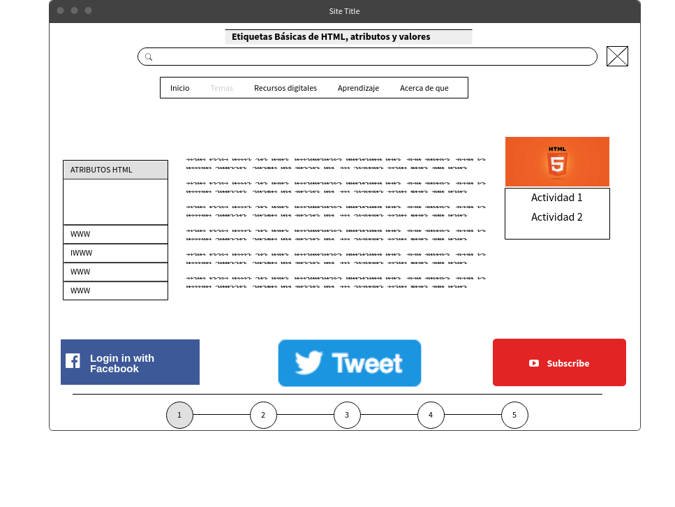

HTML5 es la última versión de HTML. El término representa dos conceptos diferentes: trata de una nueva versión de HTML, con nuevos elementos, atributos y comportamientos. Contiene un conjunto más amplio de tecnologías que permite a los sitios Web y a las aplicaciones ser más diversas y de gran alcance. Diseñado para ser utilizable por todos los desarrolladores de Open Web, esta página referencía numerosos recursos sobre las tecnologías de HTML5, clasificados en varios grupos según su función.
Semántica: Permite describir con mayor precisión cuál es su contenido.
Conectividad: Permite comunicarse con el servidor de formas nuevas e innovadoras. Sin conexión y almacenamiento: Permite a las páginas web almacenar datos localmente en el lado del cliente y operar sin conexión de manera más eficiente.
Multimedia: Nos otorga un excelente soporte para utilizar contenido multimedia como lo son audio y video nativamente. Gráficos y efectos 2D/3D: Proporciona una amplia gama de nuevas características que se ocupan de los gráficos en la web como lo son canvas 2D, WebGL, SVG, etc. Rendimiento e Integración: Proporciona una mayor optimización de la velocidad y un mejor uso del hardware. Acceso al dispositivo: Proporciona APIs para el uso de varios componentes internos de entrada y salida de nuestro dispositivo.
CSS3: Nos ofrece una nueva gran variedad de opciones para hacer diseños más sofisticados. 